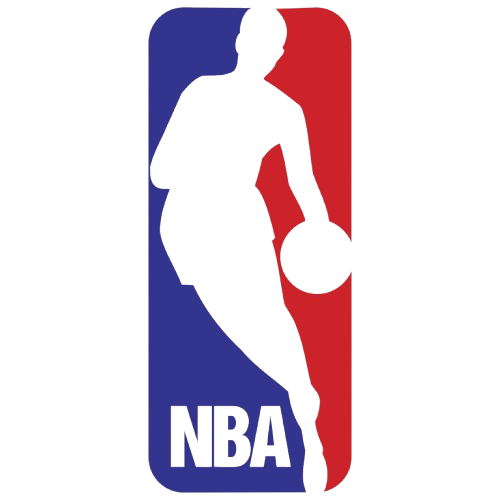

Bem vindo ao meu Basque Mundo!
Aqui você conhecerá as principais informações sobre o mundo do basquete e muito mais!



Aqui você conhecerá as principais informações sobre o mundo do basquete e muito mais!
Se você respira basquete, está no lugar certo! O Basque Mundo é o blog feito especialmente para quem vive o esporte dentro e fora das quadras. Aqui, reunimos tudo o que o basquete tem de melhor: informações sobre times, peladas locais, lojas parceiras e muito mais.
Acompanhe as principais novidades sobre os times que fazem a diferença no cenário do basquete — desde as equipes profissionais até os grupos amadores que estão crescendo nas comunidades. Aqui, você encontra análises de jogos, curiosidades sobre os jogadores, estatísticas e matérias especiais sobre os talentos que estão surgindo nas quadras brasileiras.
Quer jogar, mas não sabe onde? No BasqueMundo, divulgamos as peladas e eventos de basquete da sua região! É a oportunidade perfeita para reunir amigos, praticar o esporte e, quem sabe, formar novas equipes. Fique ligado em nosso calendário semanal e participe das partidas abertas — porque o basquete é ainda melhor quando é jogado em grupo!
Sabemos que o estilo também faz parte do jogo! Por isso, o blog traz indicações das melhores lojas de artigos esportivos, com tênis, uniformes, bolas e acessórios de alta qualidade. Além disso, mostramos promoções exclusivas e lançamentos que todo jogador precisa conhecer.